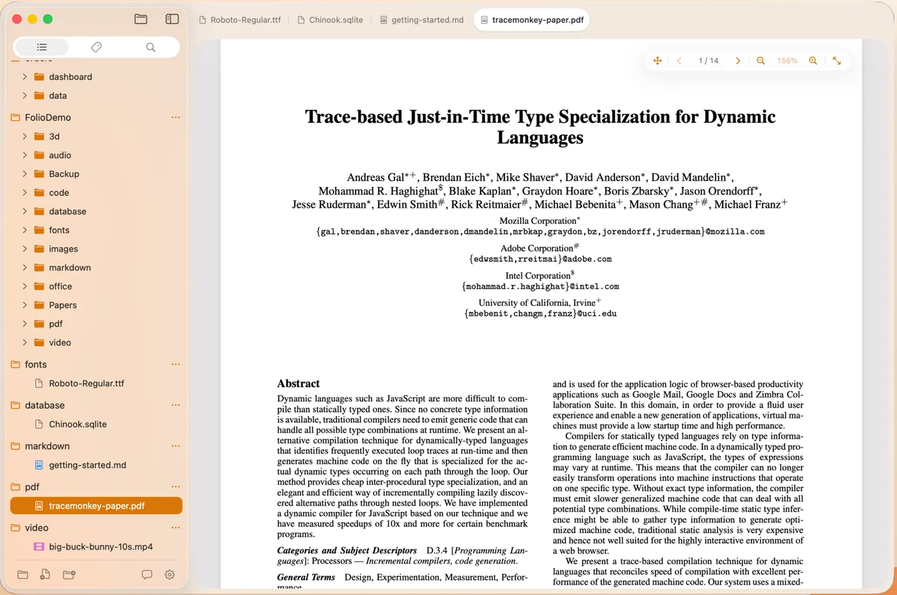
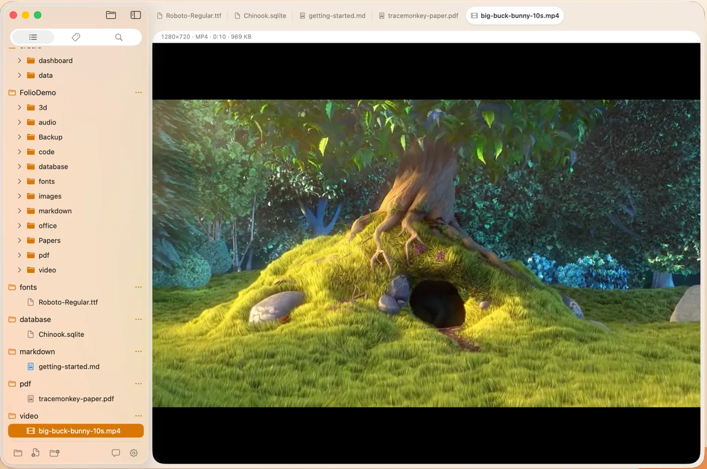

Tabs that remember
Every project gets its own workspace tab. Come back to the same folder, scroll position and open file — exactly where you left off.
Turn your Mac into one quiet, focused workspace. Documents, spreadsheets, slides, PDFs, notes, images, music and video — all in a single window.
Tabs that remember, search that reads inside files, themes you can live in. Poke around — most of these cards react.
Every project gets its own workspace tab. Come back to the same folder, scroll position and open file — exactly where you left off.
Not just filenames. Find a sentence in a PDF, a phrase in a .docx or a line in a slide deck — across every open workspace.
Crisp syntax colors and tidy indentation, from Swift to Rust.
From cream to midnight, moss to ink. Light and dark follow your system.
Mount several folders at once, then tag files with color labels to tame a messy directory.
Word, Excel, PowerPoint, Pages, Numbers, Keynote and PDF — search inside, jump by outline, highlight matches.

Play video, see audio as a waveform, spin a 3D model, preview a typeface — in the same window.

Select a Markdown, code, data or 3D file in Finder and press Space — Folio's Quick Look extension renders it properly. A Finder quick action opens it in Folio.
Delicate translucent surfaces in step with the system look — Liquid Glass where macOS provides it, never in the way of your content.
Markdown and Word documents edit right where they open. What you write is what you see — then export when you need to.
The full edition includes a terminal, Git, AI coding CLIs, automatic snapshots and tasks, built into the viewer you already know. Everything runs locally — cloud translators and AI CLIs only see what you send them.
Distributed separately from the Mac App Store version. No release date or price has been announced.
Folio is a universal file viewer for Mac. One app opens documents, spreadsheets, slides, PDFs, notes, code, images, music and video — replacing the dozen apps you usually juggle, in one quiet, focused window.
macOS Preview is built for a quick glance. Folio is built to stay: tabs, cross-file search, in-place editing for Markdown and Word, and 15 reading themes — turning "peek and close" into "open and work".
Yes. Markdown, Word (.docx) and code files are editable in place, and .docx stays .docx. Other Office files and PDFs open for reading.
Folio supports macOS 15 and above.
Folio quietly prepares when you open a folder, then only catches up on changes. Even folders with 10,000 files respond as you type — you won't notice it working.
Viewing, searching and editing all happen on your Mac. Folio never uploads your files. In the full edition, cloud translation or an AI CLI only receives the text you choose to send.
The Mac App Store version is free to download.
It is a separate build distributed directly, outside the Mac App Store. It includes a terminal, Git, AI coding CLIs, tasks, automatic snapshots and more translation back-ends. The App Store version does not include the terminal, Git, AI CLIs or tasks. No release date or price has been announced yet.
Make your Mac quiet. One window for every file.